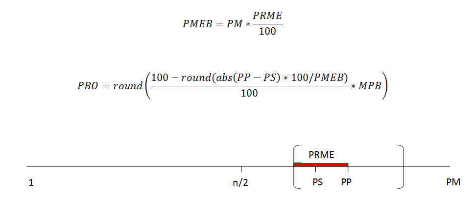
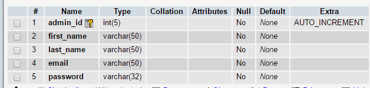
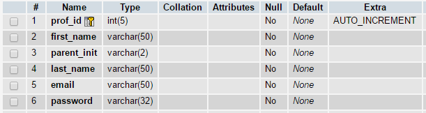
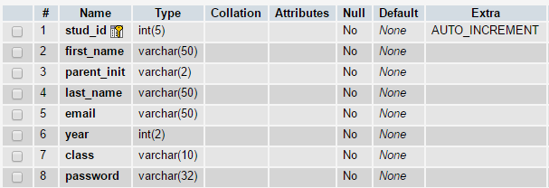
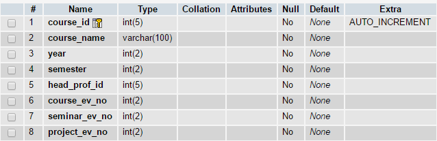
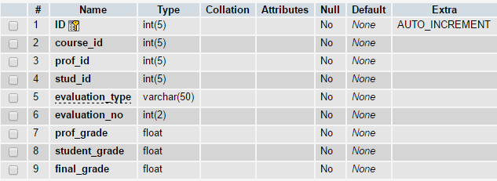
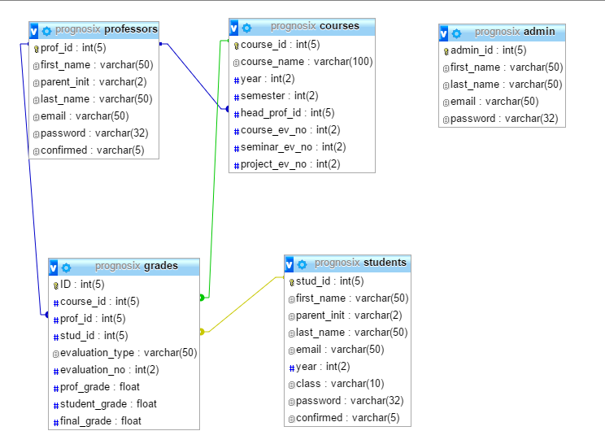

Documentatie ProGnosiX
- Victor Macoveschi
- Florin Mazilu
- Cristian Odobescu
Descriere
Acest proiect isi propune dezvoltarea unui site, care va gestiona informatii legate de realizarea unor prognoze privitoare la punctajele obtinute de studenti la probele de evaluare (activitati de laborator, examene de curs, proiecte) de la diferite discipline. Mai exact, pentru fiecare runda a prognozelor, un utilizator autentificat va putea “ghici” doar o singura data nota pe care o va lua la o disciplina. In cazul in care nota precizata de catre student va coincide cu nota reala scrisa de profesor, se vor adauga P unitati in plus la punctaj, iar in caz contrar vor fi scazute M unitati. Punctajele finale vor fi afisate pentru toti studentii.
Tehnologii Folosite
- HTML/CSS/JavaScript: pentru a crea structura de baza a site-ului nostru si pentru a o personaliza stilistic
- PHP/Ajax: pentru partea de backend
- MySQL/XML: pentru stocarea de date
- XAMP control panel pentru instalarea serverului Apache local, si a bazei de date
- PHPStorm/Notepad++ editoare text
- Platforma JIRA pentru distribuirea task-urilor
- GitHub pentru project revision control
- Balsamiq pentru realizarea schitelor paginilor
Calculul bonusului
Calculul este realizat cu ajutorul notei profesorului, nota studentului, diferite date oferite de catre profesor (punctajul maxim al unei evaluari, un procent ce reprezinta zona din scara de valori a notei in care poate fi primit bonus, bonusul maxim care poate fi oferit celui ce estimeaza cu maxima precizie nota).
- PP - Punctaj Profesor
- PS - Punctaj Student
- PM - Punctaj Maxim
- PRME - PRocent Marja Eroare
- MPB - Maxim Puncte Bonus
- MPM - Maxim Puncte Minus
- PMEB - Puncte Marja Eroare Bonus
- PBO - Puncte Bonus Oferite
- PF - Punctaj Final

Baza de date
Baza de date va contine 5 tabele (admin, courses, professors si students) si va ajuta la memorarea tuturor utilizatorilor inregistrati (profesori, studenti, admini).
Tabelul Admin va fi reprezentat printr-un ID unic, un nume si un prenume, email si o parola. Acest user are dreptul atat de a adauga profesori, studenti, materii noi, cat si de a modifica pe cei existenti.

Tabelul Professors va fi constituit dintr-un ID unic, nume, initiala tatalui, un prenume, email, si o parola. Acesta are posibilitatea de a introduce notele, de a da startul perioadei de estimari din partea studentilor.

Tabelul Students este format dintr-un ID unic, nume, initiala tatalui, prenume, email, anul in care studiaza, grupa la care este repartizat si parola de acces conform contuluia aferent. Acesta are posibilitatea de a estima note in momentul in care profesorul ii permite accesul.

Tabelul Courses va fi reprezentata de un ID unic, un nume, anul si semestrul in care se preda disciplina aferent, ID-ul profesorului care preda, si trei campuri destinate numarului de evaluari setate pentru seminariile, proiectele si examenele unei materii.

Tabelul Grades este format dintr-un ID unic, ID-ul materiilor, al profesorilor si al studentilor, tipul de evaluare (de exemplu: proiecte, laboratoare si examene de curs), numarul evaluarii, cat si cele 3 note: nota profesorului, nota „ghicita” de student si nota finala.

Notele sunt retinute totodata intr-un fisier XML. Nota finala este generata automat avand notele "ghicite"-A, notele profesorilor-B, punctajul maxim al unei evaluari-C, marja de eroare a premierii-P, numarul maxim de puncte pe care il poate primi studentul in cazul in care ghiceste corect-M si aplicand formula de calcul
Schema relationala a bazei de date

Structura site-ului
Distributia muncii
-
Front-End
- Implemetarea HTML / CSS / JavaScript : Victor Macoveschi, Cristian Odobescu, Florin Mazilu
-
Back-End
- Arhitectura bazei de date : Victor Macoveschi, Cristian Odobescu, Florin Mazilu
- Sectiunea Student : Cristian Odobescu
- Sectiunea Admin : Victor Macoveschi
- Sectiunea Profesor : Florin Mazilu
- Sistemul de autentificare : Florin Mazilu
- Comunicarea datelor din XML : Cristian Odobescu
- Atom RSS : Victor Macoveschi
- Integrarea limbajului R in PHP : Florin Mazilu
Bibliografie
- Atom Publishing Protocol
- Atom
- JSONauts
- JSON
- Integrating R and PHP
- R and PHP